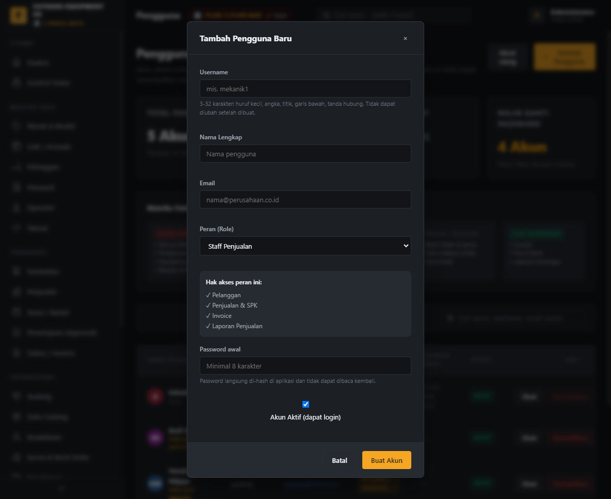
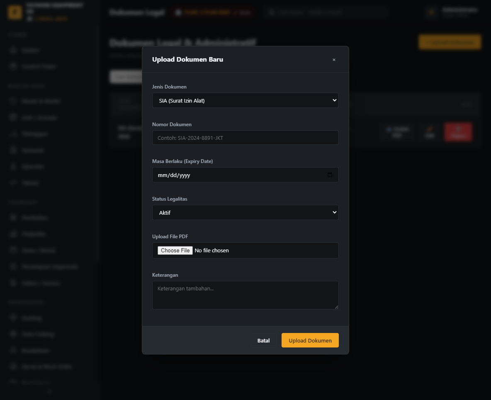

| Kelompok sidebar | Sistem |
| Alamat | #/documents (klik menu Dokumen Legal di sidebar) |
| Peran yang melihat | semua peran |
| Mode bisnis | tidak disaring mode — selalu tampil selama peran memenuhi |
| Layar dipotret | 1 |
| Form dipotret | Upload Dokumen Baru |
Berkas legal perusahaan dan unit (SIA, izin angkut, sertifikat, BPKB, STNK) beserta tanggal berakhir masa berlaku dan status legalitas.

Judul di layar: Dokumen Legal & Administratif
Subjudul: Kelola dokumen legal, perizinan, dan sertifikat perusahaan
Kolom tabel (1 baris terlihat pada potret):
| No. | Nama kolom persis di layar |
|---|---|
| 1 | JENIS DOKUMEN |
| 2 | NOMOR DOKUMEN |
| 3 | MASA BERLAKU |
| 4 | STATUS LEGALITAS |
| 5 | KETERANGAN |
| 6 | AKSI |
Kolom yang ada di luar form (pencarian/pendaftar):
Urutan kolom, nama label, tanda wajib, dan isi bawaan di bawah ini dibaca dari layar yang dipotret, bukan dari kode sumber. Tanda * adalah kolom yang memang ditahan kosong oleh aplikasi.
Dibuka dengan menekan tombol ++ Upload Dokumen.

Lebar jendela 500 px. Seluruh kolom muat tanpa menggulir pada jendela tinggi 980 px; pada jendela yang lebih pendek bagian bawah tetap perlu digulir.
| Label di layar | Jenis kolom | Isi saat jendela baru dibuka | Pilihan dropdown / teks bantu |
|---|---|---|---|
| Jenis Dokumen * | dropdown (11 pilihan) | SIA (Surat Izin Alat) | SIA (Surat Izin Alat); SIUP (Surat Izin Usaha Perdagangan); NIB (Nomor Induk Berusaha); NPWP (Nomor Pokok Wajib Pajak); Sertifikat Kepemilikan Unit; STNK (Surat Tanda Nomor Kendaraan); BPKB (Bukti Kepemilikan Kendaraan); Asuransi Unit; Perjanjian Sewa; Kontrak Kerjasama; Lainnya |
| Nomor Dokumen * | teks | Contoh: SIA-2024-8891-JKT | - |
| Masa Berlaku (Expiry Date) * | tanggal | kosong | - |
| Status Legalitas * | dropdown (4 pilihan) | AKTIF | Aktif; Kadaluarsa; Dicabut; Menunggu |
| Upload File PDF | berkas (pilih file) | kosong | - |
| Keterangan | uraian beberapa baris | Keterangan tambahan... | - |
Wajib diisi: Jenis Dokumen, Nomor Dokumen, Masa Berlaku (Expiry Date), Status Legalitas
Tombol di kaki jendela: Batal · Upload Dokumen